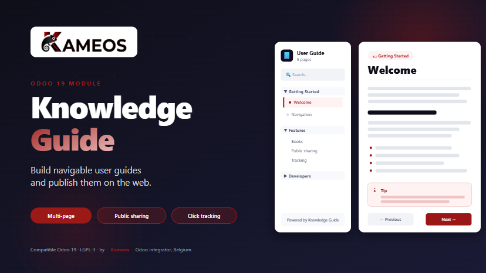

Ship documentation with your Odoo modules. Publish it on a tokenized public URL. Track who reads it.

Knowledge Guide adds two things to your Odoo database: Pages, which are HTML documentation sections grouped by category, and Books, which collect pages and can be served on a public URL secured by a UUID token.
It is meant to be the base layer that other modules depend on when they need to ship documentation. Each module installs its own pages through XML data files, and the same end-user interface displays them all in one place.
Each page has a title, an HTML body, an icon and a category. Categories collapse and expand in the sidebar. Pages can be restricted to specific user groups.
Group pages into a Book, set a slug, click Publish. The Book becomes available at
/guide/<slug>?token=<uuid> with no Odoo login required.
Type in the search bar to filter pages. Matches in titles and content are highlighted and the page scrolls to the first match automatically.
One click generates a tracked short link based on Odoo's native link.tracker.
You see how many times each guide was opened, when, and from where.
Send the guide link by email to several contacts at once. The body is fully editable and pre-filled from a template you can customize.
Each page has two HTML fields: the original content shipped by the module (read-only) and an optional custom override edited by the admin. The override is shown to readers, the original stays as a fallback.
Inspect or copy the raw markup of any page through a one-click read-only source viewer. Useful when the rich-text editor sanitizes or rewrites something you need to see in detail.
Any module that depends on knowledge_guide can ship its own pages by
dropping an XML data file in its data/ folder. No code required.
quick-start./guide/quick-start?token=<uuid>.The token is a UUID generated automatically. Regenerate it any time to invalidate previously shared links.
Ship documentation pages with your own module by depending on knowledge_guide and adding an XML data file:
<?xml version="1.0" encoding="utf-8"?>
<odoo noupdate="1">
<record id="page_my_feature" model="knowledge.guide.page">
<field name="name">My Feature</field>
<field name="category">My Module</field>
<field name="sequence">10</field>
<field name="icon">fa-cog</field>
<field name="module_source">my_module</field>
<field name="content_html"><![CDATA[
<h1>My Feature</h1>
<p>Description of the feature.</p>
]]></field>
</record>
</odoo>Then declare it in your manifest under 'depends': ['knowledge_guide'] and the corresponding entry in 'data'. Pages and categories from all installed modules are merged into the same sidebar automatically.
| Compatibility | Odoo 19 Community and Enterprise |
| Dependencies | base, web, mail, link_tracker |
| License | LGPL-3 |
| Frontend | OWL framework for the backend client action, standalone QWeb template for the public guide |
| Public URL pattern | /guide/<slug>?token=<uuid> |
Knowledge Guide is built and maintained by Kameos, an Odoo integrator based in Belgium. We work with SMEs and non-profits on Odoo Enterprise integrations, custom module development, and Flutter mobile apps connected to Odoo.
Found a bug or missing a feature? Visit kameos.be or contact us through kameos.be/contactus.